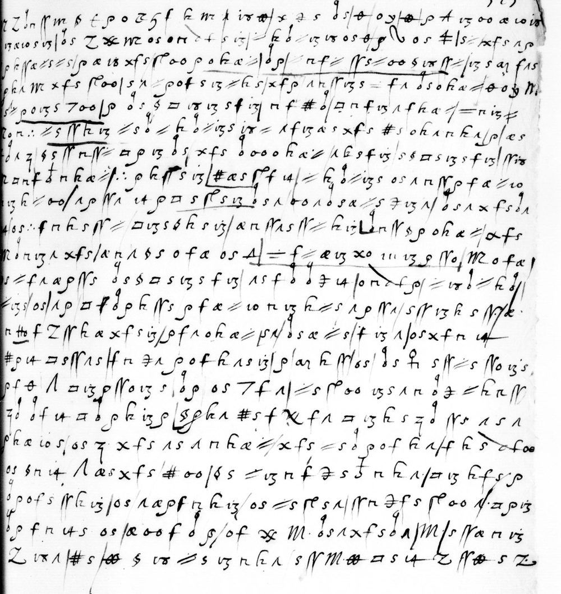

At a glanceKnown key applied · partial (88% of the cipher)
- The page
- One page of cipher, 22 lines and 777 signs, with no signature and no date. The writer reports from Rome to a correspondent who is to inform “le Roy” (Henri III).
- Where
- Paris, BnF, Cinq Cents de Colbert 338, p. 523 (Gallica btv1b10033937d, view 275, right page); catalogue entry 1572. The page is not a DECODE record.
- The cipher
- A homophonic alphabet of letter and figure signs with nulls and a few code signs (the King, the pope, “qui”, “Monsieur”): the cipher Satoshi Tomokiyo reconstructed for Cardinal d'Este's letters to Villeroy, 1584–86.
- How it was deciphered
- Tomokiyo's table, with shape names and three values fixed on glossed pages of the same volume, applied to a transcription made and hashed before decoding. The key is not ours.
- What it says
- A prince asked the pope for the title of king and was flatly refused; he turned to the emperor, who, the writer is told, gave Cosimo of Florence the grand-ducal title on his own authority. The King is to be told, but not from whom.
- Credit
- The key is Satoshi Tomokiyo's. Brice Dudout (Europe chiffrée), working with Claude Opus 5.5 agents, transcribed the page, named the shapes and deciphered it (pull request #278, merged 5 November 2026).
- Still open
- 22 words, most of them the prince's name in line 1 (a code sign with no value) and the ends of lines 3–4; one sign (the barred dumbbell) that is e in this reading and a null in Tomokiyo's table. The key's own test on this page is only partial.
01The page

The page is the right-hand leaf of Gallica view 275 in the Cinq Cents de Colbert volume 338, numbered 523. It is wholly in cipher, 22 lines and 777 signs, with no contemporary gloss and no signature. The pages around it (about pp. 430–525) mix letters of Cardinal Luigi d'Este, protector of France at Rome, with French dispatches from Rome of 1584–85 in the same cipher. The writer of p. 523 reports to a correspondent (“vous”) who is to inform the King. Who wrote it and to whom is not stated on the page, so neither is named here, and the date, 1584–85, comes from the file and not from the leaf.
The page belongs to catalogue entry 1572, nine letters of Luigi d'Este “en partie chiffrées” in this volume (pp. 433, 459, 491, 503, 511 ff.). Only p. 523 is deciphered here. The other leaves are not transcribed, and the entry stays open apart from this page.
02The key
The key is Satoshi Tomokiyo's reconstruction of “Cardinal d'Este's Cipher (1584–1586)” on Cryptiana, made from the cardinal's letters to Villeroy in BnF fr. 16041–16042. Colbert 338 is not cited there, and we do not claim the table. What was added here is small:
- shape names for the signs, fixed on glossed pages of this volume (pp. 435–438, 453–454 and 504);
- the alpha with a descending tail is f (probable words “differer” and “difficultes”), and the large looped rho is a;
- the barred dumbbell is e, where Tomokiyo's table has a null. This is left open; it touches only lines 1 and 22;
- after the measurement, the thin c with a barred t was found by reading to be nn (donner, donna, vienne).
The nulls are M and Z. The code signs read are the King, the pope, “qui”, “Monsieur”, “faire” and, doubtfully, “pour”. The full table is in the Full texts section below.
03The reading

The decoded text builds French sentences with gaps. In the version below the spelling of the cipher is kept, braces mark a guess for an unresolved word given for the sense only (“voudroit”, “Florence”, “faire”), and “s'est adressé” normalises the decoded “et adressé”.
… que le Roy d'{y} … a [fait] rechercher le pape {…} de donner tiltre de Roy, qu'il {…} ; et que Sa Saincteté, a ce que le {…} a dict, tout nettement l'a refusé ; mais que le {…} est adverti que, {…} refusé, ledict Roy d'{y} s'est adressé a l'empereur, ou il poursuict fort d'obtenir tel tiltre. Et sur ce que je disois … qu'ils m'en ont parlé, que ledict sieur empereur ne {voudroit} bailler icelui tiltre de son aucthorité sans y apeler de ses electeurs, lesquels y debvoient premier consentir, on m'a dict que lorsque Cosme duc de {Florence} fut créé grand duc de Tuscane, l'empereur seul lui donna tel tiltre de sa plaine aucthorité sans en rien communiquer ausdicts electeurs. De quoi j'ai pensé vous adviser afin de le {faire} entendre au Roy, pour prandre la dessus tele resolution qu'il lui plaira. Mais je vous prie qu'il ne se saiche de qui que ce soict que tel advis vienne de moi, pour ce que je me trouverois privé a l'advenir de sçavoir de teles nouvelles par la voie de ceulx du pape, lesquels encores … je me meterois en peine.
In English:
“… that the King of {y} had the pope asked to grant him the title of king; His Holiness, so {…} told me, flatly refused; but word is that after the refusal the said King of {y} turned to the emperor, where he is pressing hard for the title. When I said to those who spoke of it to me that the emperor would not grant such a title on his own authority without calling his electors, who would first have to consent, I was told that when Cosimo, duke of {Florence}, was made grand duke of Tuscany, the emperor alone gave him the title by his full authority, without consulting the electors. I thought I should tell you, so that you may let the King know and he may take the decision he pleases. But I beg you that no one learn from anyone that this advice came from me, for I would be deprived in future of such news, which reaches me through people of the pope's, and I would be in trouble.”
The working translation adds a note on the grand-ducal title: it was created by Pius V (bull of 27 August 1569) and confirmed to Francesco de' Medici by the emperor Maximilian II (1575–76), and the argument in the letter points to that imperial recognition. This context was not checked against a source here. The prince who wanted a royal title is not identified: his country is the code sign y, which has no value in the table, and Savoy, Mantua and Ferrara are guesses that were not checked.
The decoded text counts 200 words: 146 certain, 31 probable, 1 restored (“[m]ais”) and 22 unresolved. Certain plus probable is 177, or 88.5% without the restored word, under the 95% bar, so this page is a partial decipherment. One AI reader checked the decryption as sentences (grade B: coherent, but raw).
04How the key was tested
The key was tested twice, and neither test was passed. Against the contemporary glosses of the volume (29 October 2026) five tests failed or were not admissible: the best, p. 504, scored 0.777 of characters against 0.332 for the best shuffled key, with thresholds of 0.85 and 0.75, and the glosses of this volume are summaries and not literal. All five pieces were then used up.
The second test used one held-out page, this one. The key was frozen, the page was transcribed by shape names only and hashed before decoding, and a single measurement was made (5 November 2026): 0.457 of decoded letters covered by French words of five letters or more, against 0.078 for the best of 200 shuffled keys, a gap of 0.379. The thresholds fixed in advance were 0.60 and a gap of 0.30, so the result is partial by that protocol. It was declared beforehand that the period glosses themselves score 0.50–0.73 on this measure, so 0.60 sits near the ceiling.
After the measurement, a blind sheet of 14 shape questions, answered by Brice Dudout from the shapes alone, settled “l'a”, “il” and “premier” and removed one stray sign (86.6% before, 88.5% after; the pre-registered maximum was 89.4%). Three remarks on the sheet were not foreseen by its pre-registration and were applied as written; none changed a count.
05What remains uncertain
- 22 unresolved words, mostly in line 1 (the prince's name, the code sign y and two barred dumbbells, which has no value in the table or in this key) and at the ends of lines 3–4. Blocker: open codes.
- The barred dumbbell, e here and a null in Tomokiyo's table. Settling it needs a separate, hashed key amendment and a fresh glossed page.
- One reader. An AI agent transcribed and deciphered the page; Brice Dudout answered the shape sheet only. No palaeographer has checked it.
- Only p. 523. The glossed pages used to fix the shapes were deciphered at the time and are not counted; pp. 513, 517–518 and the other letters of entry 1572 are not read.
- Prior work. Cryptiana gives the table and no edition of a letter. Alessandra Favalli's article in Cuadernos de Historia Moderna 49/2 (2024) was consulted in full; it covers the Este–Medici precedence quarrel up to 1580 and does not mention this request. Her thesis (HAL tel-03435435, 1559–1580) could not be fetched and was not consulted. No edition of fr. 16041–16042 or of this advice was found; if one prints it, it will be credited.
Full texts
The transcription and the decryption of every document on this page, so that the reading can be used and checked. Short files are shown here; all are in the repository.
Colbert 338 p. 523, whole page in cipher read in part
A prince (name in a code word, not read) had the pope asked for the title of king and was refused; he turned to the emperor; the writer was told the emperor alone gave Cosimo of Florence his grand-ducal title; he asks that the King be told and that his source among the pope's people stay secret.
Builds coherent sentences, but under the read bar of 95% of words read as sense (88% here); the holes are marked in the reading.
Transcription
# este1585 - Paris, BnF, Cinq Cents de Colbert 338, p. 523 (Gallica btv1b10033937d, view 275, right page): the whole page in # cipher, 22 lines, 777 signs. Transcribed by shape names only (no decoding) by one AI agent on 5 Nov 2026, after the key # K-C01 was frozen; that copy was hashed before decoding (SHA-256 08a3f8a0542dbbc3d5409a5b3f79cb7d6b749d8a8226d6842dd15c8c7f586056) # and is the measured one. This is the READING copy: 9 tokens changed by the blind shape sheet R14 (answered by Brice Dudout): # L1 t1 ? -> m; L1 t16 dag -> p (new sign, no value); L1 t18 and t27 oplus -> oob (barred dumbbell); L3 t22 o -> dl; # L5 t22 o -> dl; L10 t14 dl -> ss; L14 t19 S -> s (pen stroke set aside; no value); L20 t32 ? -> ^. # Shape names are listed in key.tsv. ? = cut or unidentified shape. Fine strokes of a later hand (|) ignored. No images here. L1 m Z dl n N m S newt rho o Z Z7 f k m p 18 oob x 3 zs dl zs th o y oob rho A 13 oo al 10 13 L2 13 al 10 zs 13 dl zs Z Xs m o zs o n newt zs 13 tt k dl tt 13 18 o zs th Z7 rhoB o zs tt zs tt x f zs ^ rho L3 rho k N al tt zs tt zs rho al 18 x f zs rl oo rho o k al tt dl rho tt n f tt N zs tt oo ss 18 N tt rl 13 zs aj f ^ zs L4 rho k ^ m x f zs rl oo zs ^ tt rho o f zs 13 tt k zs x f rho ^ k N 13 zs eq f ^ dl zs o k al tt th o Z7 M L5 zs tt rho o 13 zs 7 oo rho dl zs ss sq 18 13 zs f 13 n f # dl sq n f 13 ^ f k al tt eq n 13 tt L6 rl o n tri tt zs N k 13 tt zs dl tt k dl tt 13 zs 18 tt ^ f 13 al zs x f zs # zs o k ^ n k ^ rl rho al zs L7 ? dl ^ Z7 ss zs N n N tt sq rho 13 dl zs x f zs dl oo o k al tt ^ k zs f 13 zs ss sq zs 13 zs f 13 N 18 L8 n o n f dl n k al tt rl tri rho k N zs 13 # al zs rl f 14 tt k dl tt 13 zs o zs ^ n N rho f al tt 10 L9 13 k tt oo ^ rho N ^ 14 rho sq zs rl zs 13 o zs ^ oo ^ dl zs zs al tt zs 3 13 ^ dl zs ^ x f zs dl ^ L10 14 o zs tri f n k zs N tt sq 13 zs ss k zs 13 al n N ^ zs N tt k 13 Lb n N ss rho o k al tt al f zs L11 M dl n 13 ^ x f zs al n ^ ss zs o f al o zs A eq f tt al 13 x o m 13 rho N o M o f al L12 zs tt f ^ al rho N zs dl zs ss sq zs 13 zs f 13 ^ zs f dl dl 3 14 o n newt rho tt 18 dl tt k dl L13 tt 13 zs o zs ^ rho sq Lb dl rho k N zs rho f al tt 10 n 13 k tt zs ^ rho N ^ zs N 13 k zs N al L14 n Ho f Z N k al x f zs 13 rho f ^ o k al tt s ^ dl zs al tt zs f 13 ^ o zs x f n 14 L15 # rho 14 sq zs N ^ zs tt n 3 ^ rho o f k ^ zs 13 rho aj k N o zs dl zs ven zs N tt zs N o 13 zs L16 rho f th BIGA sq 13 rho N o 13 zs dl rho o zs 7 f ^ tt zs rl oo 13 zs ^ n dl 3 tt k n N L17 Z7 dl dl f 14 sq dl rho k 13 rho ss rho k ^ # zs f Xs f ^ sq 13 k zs Z7 dl N zs ^ zs ^ L18 rho k al 10 zs o zs Z7 x f zs ^ zs ^ n k al tt x f zs tt zs dl rho o f k ^ f k zs newt oo L19 o zs ss n 14 BIGA al zs x f zs # oo ss zs tt 13 n f 3 zs 3 n k ^ sq 13 k f zs rho L20 dl rho o f zs N k 13 o zs ^ al rho f n k 13 o zs tt zs rl zs ^ N n 3 f zs rl oo ^ sq rho 13 L21 dl rho f n 14 zs o zs al oo f dl S o f Xs M dl zs ^ x f zs dl ^ M zs N al n 13 L22 Z 18 ^ # zs oob ss 18 tt zs 13 n k ^ zs N M oob sq zs 14 Z N oob zs Z
Decryption
# este1585 - mechanical decryption of transcription.txt with the reading key (key.tsv, value_reading), line by line,
# no correction. Each line: tokens as token=value, then the letters. [word] = code word; ? = sign with no value; nulls give nothing.
L1 m=g Z=- dl=l n=o N=n m=g S=m newt=nn rho=a o=d Z=- Z7=[qui] f=u k=i m=g p=? 18=e oob=e x=q 3=u zs=e dl=l zs=e th=[Roy] o=d y=? oob=e rho=a A=z 13=r oo=e al=c 10=h 13=r
glongmnnad[qui]uig?eequele[Roy]d?eazrechr
L2 13=r al=c 10=h zs=e 13=r dl=l zs=e Z=- Xs=[le pape] m=g o=d zs=e o=d n=o newt=nn zs=e 13=r tt=t k=i dl=l tt=t 13=r 18=e o=d zs=e th=[Roy] Z7=[qui] rhoB=a o=d zs=e tt=t zs=e tt=t x=q f=u zs=e ^=s rho=a
rcherle[le pape]gdedonnertiltrede[Roy][qui]adetetquesa
L3 rho=a k=i N=n al=c tt=t zs=e tt=t zs=e rho=a al=c 18=e x=q f=u zs=e rl=l oo=e rho=a o=d k=i al=c tt=t dl=l rho=a tt=t n=o f=u tt=t N=n zs=e tt=t oo=e ss=m 18=e N=n tt=t rl=l 13=r zs=e aj=f f=u ^=s zs=e
aincteteacequeleadictlatoutnetementlrefuse
L4 rho=a k=i ^=s m=g x=q f=u zs=e rl=l oo=e zs=e ^=s tt=t rho=a o=d f=u zs=e 13=r tt=t k=i zs=e x=q f=u rho=a ^=s k=i N=n 13=r zs=e eq=f f=u ^=s dl=l zs=e o=d k=i al=c tt=t th=[Roy] o=d Z7=[qui] M=-
aisgqueleestaduertiequasinrefusledict[Roy]d[qui]
L5 zs=e tt=t rho=a o=d 13=r zs=e 7=s oo=e rho=a dl=l zs=e ss=m sq=p 18=e 13=r zs=e f=u 13=r n=o f=u #=i dl=l sq=p n=o f=u 13=r ^=s f=u k=i al=c tt=t eq=f n=o 13=r tt=t
etadresealempereurouilpoursuictfort
L6 rl=l o=d n=o tri=b tt=t zs=e N=n k=i 13=r tt=t zs=e dl=l tt=t k=i dl=l tt=t 13=r zs=e 18=e tt=t ^=s f=u 13=r al=c zs=e x=q f=u zs=e #=i zs=e o=d k=i ^=s n=o k=i ^=s rl=l rho=a al=c zs=e
ldobtenirteltiltreetsurcequeiedisoislace
L7 ?=? dl=l ^=s Z7=[qui] ss=m zs=e N=n n=o N=n tt=t sq=p rho=a 13=r dl=l zs=e x=q f=u zs=e dl=l oo=e o=d k=i al=c tt=t ^=s k=i zs=e f=u 13=r zs=e ss=m sq=p zs=e 13=r zs=e f=u 13=r N=n 18=e
?ls[qui]menontparlequeledictsieurempereurne
L8 n=o o=d n=o f=u dl=l n=o k=i al=c tt=t rl=l tri=b rho=a k=i N=n zs=e 13=r #=i al=c zs=e rl=l f=u 14=i tt=t k=i dl=l tt=t 13=r zs=e o=d zs=e ^=s n=o N=n rho=a f=u al=c tt=t 10=h
odouloictlbainericeluitiltredesonaucth
L9 13=r k=i tt=t oo=e ^=s rho=a N=n ^=s 14=i rho=a sq=p zs=e rl=l zs=e 13=r o=d zs=e ^=s oo=e ^=s dl=l zs=e zs=e al=c tt=t zs=e 3=u 13=r ^=s dl=l zs=e ^=s x=q f=u zs=e dl=l ^=s
ritesansiapelerdesesleecteurslesquels
L10 14=i o=d zs=e tri=b f=u n=o k=i zs=e N=n tt=t sq=p 13=r zs=e ss=m k=i zs=e 13=r al=c n=o N=n ^=s zs=e N=n tt=t k=i 13=r Lb=a n=o N=n ss=m rho=a o=d k=i al=c tt=t al=c f=u zs=e
idebuoientpremierconsentiraonmadictcue
L11 M=- dl=l n=o 13=r ^=s x=q f=u zs=e al=c n=o ^=s ss=m zs=e o=d f=u al=c o=d zs=e A=z eq=f f=u tt=t al=c 13=r x=q o=d m=g 13=r rho=a N=n o=d M=- o=d f=u al=c
lorsquecosmeducdezfutcrqdgrandduc
L12 zs=e tt=t f=u ^=s al=c rho=a N=n zs=e dl=l zs=e ss=m sq=p zs=e 13=r zs=e f=u 13=r ^=s zs=e f=u dl=l dl=l 3=u 14=i o=d n=o newt=nn rho=a tt=t 18=e dl=l tt=t k=i dl=l
etuscanelempereurseulluidonnateltil
L13 tt=t 13=r zs=e o=d zs=e ^=s rho=a sq=p Lb=a dl=l rho=a k=i N=n zs=e rho=a f=u al=c tt=t 10=h n=o 13=r k=i tt=t zs=e ^=s rho=a N=n ^=s zs=e N=n 13=r k=i zs=e N=n al=c
tredesapalaineaucthoritesansenrienc
L14 n=o Ho=m f=u Z=- N=n k=i al=c x=q f=u zs=e 13=r rho=a f=u ^=s o=d k=i al=c tt=t s=? ^=s dl=l zs=e al=c tt=t zs=e f=u 13=r ^=s o=d zs=e x=q f=u n=o 14=i
omunicquerausdict?slecteursdequoi
L15 #=i rho=a 14=i sq=p zs=e N=n ^=s zs=e tt=t n=o 3=u ^=s rho=a o=d f=u k=i ^=s zs=e 13=r rho=a aj=f k=i N=n o=d zs=e dl=l zs=e ven=o zs=e N=n tt=t zs=e N=n o=d 13=r zs=e
iaipensetousaduiserafindeleoentendre
L16 rho=a f=u th=[Roy] BIGA=[pour] sq=p 13=r rho=a N=n o=d 13=r zs=e dl=l rho=a o=d zs=e 7=s f=u ^=s tt=t zs=e rl=l oo=e 13=r zs=e ^=s n=o dl=l 3=u tt=t k=i n=o N=n
au[Roy][pour]prandreladesusteleresolution
L17 Z7=[qui] dl=l dl=l f=u 14=i sq=p dl=l rho=a k=i 13=r rho=a ss=m rho=a k=i ^=s #=i zs=e f=u Xs=[le pape] f=u ^=s sq=p 13=r k=i zs=e Z7=[qui] dl=l N=n zs=e ^=s zs=e ^=s
[qui]lluiplairamaisieu[le pape]usprie[qui]lneses
L18 rho=a k=i al=c 10=h zs=e o=d zs=e Z7=[qui] x=q f=u zs=e ^=s zs=e ^=s n=o k=i al=c tt=t x=q f=u zs=e tt=t zs=e dl=l rho=a o=d f=u k=i ^=s f=u k=i zs=e newt=nn oo=e
aichede[qui]quesesoictqueteladuisuienne
L19 o=d zs=e ss=m n=o 14=i BIGA=[pour] al=c zs=e x=q f=u zs=e #=i oo=e ss=m zs=e tt=t 13=r n=o f=u 3=u zs=e 3=u n=o k=i ^=s sq=p 13=r k=i f=u zs=e rho=a
demoi[pour]cequeiemetrouueuoispriuea
L20 dl=l rho=a o=d f=u zs=e N=n k=i 13=r o=d zs=e ^=s al=c rho=a f=u n=o k=i 13=r o=d zs=e tt=t zs=e rl=l zs=e ^=s N=n n=o 3=u f=u zs=e rl=l oo=e ^=s sq=p rho=a 13=r
laduenirdescauoirdetelesnouuelespar
L21 dl=l rho=a f=u n=o 14=i zs=e o=d zs=e al=c oo=e f=u dl=l S=m o=d f=u Xs=[le pape] M=- dl=l zs=e ^=s x=q f=u zs=e dl=l ^=s M=- zs=e N=n al=c n=o 13=r
lauoiedeceulmdu[le pape]lesquelsencor
L22 Z=- 18=e ^=s #=i zs=e oob=e ss=m 18=e tt=t zs=e 13=r n=o k=i ^=s zs=e N=n M=- oob=e sq=p zs=e 14=i Z=- N=n oob=e zs=e Z=-
esieemeteroisenepeineeReading
# este1585 - reading of BnF, Cinq Cents de Colbert 338, p. 523 (whole page in cipher)
Read in part (5 Nov 2026). Counted by script on the word list below: **200 words: 146 certain, 31 probable, 1 restored, 22 unresolved**, so 177 = **88.5% without the restored word** (89.0% with it). Under 95%: read in part.
Conventions: the text is the decryption of `transcription.txt` with the reading key (`key.tsv`), cut into words, with the spelling of the cipher kept.
- a bare word is **certain** (every letter given by the key, clear sense);
- `*word` is **probable** (one letter from a sign of uncertain value, a code word, or the blind shape sheet);
- `[x]word` is **restored** (letters supplied by sense; one word, "[m]ais");
- `{xxx}` is **unresolved** (the decoded letters are shown).
## Word list (as counted)
{longmnna} {quiuigdage} {oplus} que le Roy d' {y} {oplus} a {z} *rechercher *le *pape {g} de *donner tiltre de Roy *qu'il {adet} et que Sa *Saincteté a ce que le {a} dict *l'a tout nettement l' refusé [m]ais {g} que le {e} est adverti que {asin} *refusé ledict Roy {dqui}
et adressé a l'empereur ou *il poursuict fort {l} d'obtenir tel tiltre et sur ce que je disois {lace}
{ls} *qui m'en ont parlé que ledict sieur empereur ne {odouloict} *bailler icelui tiltre de son aucthorité sans y apeler de ses *electeurs lesquels
y debvoient *premier consentir a on m'a dict *que lorsque Cosme duc de {z} fut *créé grand duc *de Tuscane l'empereur seul lui *donna tel tiltre de sa *plaine aucthorité sans en rien communiquer ausdict {m} *electeurs
de quoi j'ai pensé *vous adviser afin de le {o} entendre au Roy *pour prandre la dessus tele resolution *qu'il lui plaira mais je *vous prie *qu'il ne se saiche de *qui que ce soict que tel advis *vienne de moi *pour ce que je me *trouverois privé a l'advenir de sçavoir de teles *nouvelles par la voie de *ceulx du *pape lesquels encores je {e} meterois en peine {e}
## The text (normalised, spelling of the cipher kept)
… {name} que le Roy d'{y} … a [fait] rechercher le pape {…} de donner tiltre de Roy, qu'il {…} ; et que Sa Saincteté, a ce que le {…} a dict, tout nettement l'a refusé ; mais que le {…} est adverti que, {…} refusé, ledict Roy d'{y} s'est adressé a l'empereur, ou il poursuict fort d'obtenir tel tiltre. Et sur ce que je disois … qu'ils m'en ont parlé, que ledict sieur empereur ne {voudroit} bailler icelui tiltre de son aucthorité sans y apeler de ses electeurs, lesquels y debvoient premier consentir, on m'a dict que lorsque Cosme duc de {Florence} fut créé grand duc de Tuscane, l'empereur seul lui donna tel tiltre de sa plaine aucthorité sans en rien communiquer ausdicts electeurs. De quoi j'ai pensé vous adviser afin de le {faire} entendre au Roy, pour prandre la dessus tele resolution qu'il lui plaira. Mais je vous prie qu'il ne se saiche de qui que ce soict que tel advis vienne de moi, pour ce que je me trouverois privé a l'advenir de sçavoir de teles nouvelles par la voie de ceulx du pape, lesquels encores … je me meterois en peine.
In this normalised text, `{word}` in braces is a guess for an unresolved word, given for the sense only and not counted ("voudroit", "Florence", "faire"). "s'est adressé" normalises the decoded "et adressé"; "ausdicts" the decoded "ausdict".
The prince who asks for the title is **not identified**: `y` is a code word (the same sign at the end of line 4, "ledict Roy d'{y}"), with no value in the key.Translation
# este1585 - English translation (working translation of reading.md)
Read in part: 88.5% of the words without restorations. `{…}` = unresolved; `{y}` = the code word for the prince's country, not read.
"… that the King of {y} had the pope asked to grant him the title of king; His Holiness, so {…} told me, flatly refused; but word is that after the refusal the said King of {y} turned to the emperor, where he is pressing hard for the title. When I said to those who spoke of it to me that the emperor would not grant such a title on his own authority without calling his electors, who would first have to consent, I was told that when Cosimo, duke of {Florence}, was made grand duke of Tuscany, the emperor alone gave him the title by his full authority, without consulting the electors. I thought I should tell you, so that you may let the King know and he may take the decision he pleases. But I beg you that no one learn from anyone that this advice came from me, for I would be deprived in future of such news, which reaches me through people of the pope's, and I would be in trouble."
Note. The grand-ducal title was created by Pius V (bull of 27 August 1569) and confirmed to Francesco de' Medici by the emperor Maximilian II (1575-1576); the argument in the letter points to that imperial recognition. The prince who wanted a royal title in 1584-1585 is not identified here (Savoy, Mantua or Ferrara are mere context guesses and are not checked).Key: key.tsv
06Sources
- Paris, BnF, Cinq Cents de Colbert 338, p. 523: Gallica btv1b10033937d, view 275; the catalogue entry is in BnF Archives et manuscrits.
- S. Tomokiyo, Cryptiana, “Cardinal d'Este's Cipher (1584–1586)” (henryiii.htm), built on BnF fr. 16041–16042: the key.
- A. Favalli, “Questo titolo conosciuto da tutto il mondo…”, Cuadernos de Historia Moderna 49/2 (2024).
- Brice Dudout, Europe chiffrée, with Claude Opus 5.5 agents: transcription, shape names, tests and reading, contributed in pull request #278.
Manuscript rights: Bibliothèque nationale de France. Images cropped here from the Gallica scan.
Transcription, decryption, key, tests and notes: targets/este1585/ in the repository.